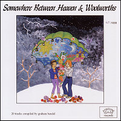 |
5 March 2007.
"Somewhere Between Heaven & Woolworths" is the latest release from Fortune Teller Press. A collection of "things without a particular angle or unifying theme, 20 tracks in all, including: punk rock, rock, roll, soulfulness, skewed comedians singing, lesser-known acts & the downright disregarded". The Television Personalities appear with a cover of The Who's "The Goods Gone" and one of Kelis' "Milkshake" |
|
24 February 2007.
Out now on The Beautiful Music the second release in their Television Personalities tribute series: "I Would Write A Thousand Words". The first 200 copies include a limited edition bonus disc including live TVP covers, submissions that didn't fit on volume 2 and some previews from volume 3.
The Shambles - If I Could Write Poetry
Summer Factory - Look Back In Anger
Semion - The Prettiest Girl In The World
The Cult 45's - Silly Girl
Pacific Radio - This Time There's No Happy Ending
The Groovy Cellar - Say You Won't Cry
Superczar - There's A Cloud Over Liverpool
Thy Surfyn Eyes - La Grande Illusion
The Airwaves - Part Time Punks
The Mandervilles - Where's Bill Grundy Now (Slow Mix)
Swell Maps - 14th Floor
The Paisley Shirts - The Dream Inspires
The Loch Ness Mouse - Favorite Films
Jonathan Caws-Elwitt - Geoffrey Ingram
The Nomen - Mysterious Ways
Phil Wilson - God Snaps His Fingers
Pub Fiction - Three Wishes
BMX Bandits - Girl At The Bus Stop
The Legend! - Look Back In Anger (Live)
Nikki Sudden - If I Could Write Poetry |
 |
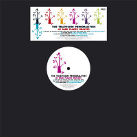 |
20 February 2007.
Domino USA released a 4 track 12" featuring remixes from My Dark Places, quite aptly titled My Dark Places Remixes.
A1. You Kept Me Waiting Too Long (E*Vax [Ratatat] Remix)
A2. My Dark Places (I Will [Battles] Remix)
B1. All The Young Children (Rainbows In Tunnels Mix By Lingling)
B2. She Can Stop Traffic (Black Dice Remix) |
|
5 December 2006.
Overground Records announces a new TVPs album to be released on February 19th: "Are We Nearly There Yet". It features unreleased recordings from the summer of 2005, the period just after Dan's release from prison and preceding his Domino recordings. |
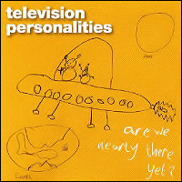 |
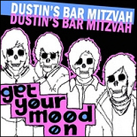 |
30 October 2006.
Early this year Dustin's Bar Mitzvah starred in the video of TVPs "All The Young Children On Crack". Now Dan is returning the favour in Dustins' debut album "Get Your Mood On" by introducing the band in the opening track "Artrocker": "Dustin's Bar Mitzvah, the most horrendous band I've stumbled across, would you like me to elaborate?". Hilarious. |
|
23 October 2006.
Out now on Sanctuary Records: CD86, the 20th anniversary compilation of the movement coined by the release of the NME cassette C86. Compiled and Annotated by St Etienne's Bob Stanley, it features TVPs' "Paradise Estate" |
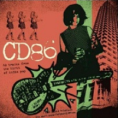 |
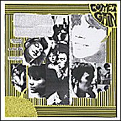 |
23 May 2006.
Comet Gain's new EP's title track "Beautiful Despair" is inspired by an unreleased TVP's song by the same title that Dan & co. used to play live back in 1987/88. Both this and TVP's version are vaguely reminiscent of "King and Country" and they do share some lyrics. Still this is an entirely new song which (in my opinion) ranks along Comet Gain's finest. Here is the story in David Feck's own words, from the record's sleeve:
The words "Beautiful Despair" comes from a half recalled TVP's song and a fanzine I used to do back in the days when a man was a boy and paisley shirts was the new punk. A song I heard under a building somewhere in wild north London when you could still see those kinda shows and the words and feel stayed and reminded me of half remembered nites of melancholic belonging and the followed failures that we daydreamers fall unexpected into. We were all together. Together alone. Blessed are the fucked-up to put the words in our heart in our hands. So this is for Daniel and lost-a-likes (he is better now).
The sleeve is a beautiful 24" poster, folded in 4 to accomodate the 12" vinyl. Out now on What's Your Rupture, this record is a must have. |
|
30 March 2006.
The Television Personalities contribute a cover of June Brides' "I Fall", on "Still Unravished", the long deserved Junies tribute album on YesBoyIcecream Records. |
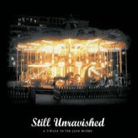 |
|
15 February 2006.
A new fantastic TVPs tribute is out: "Someone To Share My Life With", released by But Is It Art? of Sweden (in collaboration with The Beautiful Music of Canada, home of the original TVPs tributes series).
The track listing is a sort of bridge between vol. 1 and the forthcoming vol. 2 of the canadian series but, besides being a terrific selection of songs, this tribute has also the nice characteristic of being a vinyl release. A must buy.
SIDE 1
BMX BANDITS - Girl At The Bus-Stop
PACIFIC RADIO - This Time There's No Happy Ending
SUMMER FACTORY - Look Back In Anger
SEMION - The Prettiest Girl In The World
NIKKI SUDDEN - If I Could Write Poetry
SIDE 2
TWO ANGRY MEN - Part Time Punks
LOVEJOY - Someone To Share My Life With (Rehearsal Mix)
SWELL MAPS - 14th Floor
THE SHAMBLES - If I Could Write Poetry
THE HIGHER ELEVATIONS - The Engine Driver Song (Alternate Mix)
JONATHAN CAWS-ELWITT - Geoffrey Ingram
|
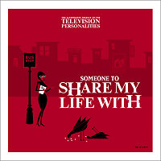 |
|
06 December 2005.
Yellow Mica Recordings of Sweden brings you Ara, Stew and Jen's version of "Someone To Share My Life With" on the new EP by The Young Untold. (No, it's not Boyracer: That's Stew, Jen and Ara!). If you catch them live you might also hear them doing a great live rendition of "Things Have Changed Since I Was A Girl". |
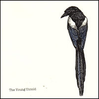 |
|
01 December 2005.
Domino Records posted announcement of release of the long awaited new TVPs records. "My Dark Places" will be released by Domino on the 27th February and it will be preceded by the single "All The Young Children On Smack, All The Young Children On Crack" released on the 6th February on 7”. |
|
16 November 2005.
Swedish band The Boys cover TVP's "The Girl Who Had Everything" on their debut album "In Loch Ness". Out now on the quite aptly named Smashing Time Records of Sweden. |
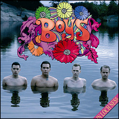 |
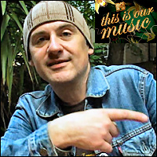 |
14 November 2005.
Episode #3 of MTV Sweden's documentary series This Is our Music features "Dan Treacy från Television Personalities". The documentary crew follows Dan and Ed around London for a very touching interview. We also get to hear some snippets of the new songs which sound gorgeous. You can watch by clicking "Här kan du se programmen" on the top right of the episode page. |
|
17 October 2005.
Andy @ Little Teddy central let us know that "Fashion Conscious" is back in print and available through the mailorder. "Slightly different artwork, but no major changes" said Andy. |
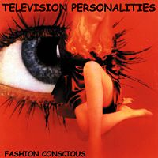 |
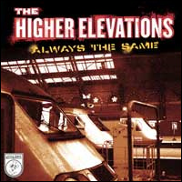 |
4 October 2005.
The vinyl version of "Always The Same", The Higher Elevations' debut album, includes as bonus track their fab version of TVP's "The Engine Driver Song (also available on "If I Could Write Poetry" the Television Personalities tribute album). Out now on Little Teddy. |
|
16 July 2005.
Scheduled for August 15 release on Damaged Goods, "And They All Lived Happily Ever After" is a new compilation (compiled by Dan Treacy) of rare and live material dating from 1981 right through to some of their latest recordings from 2005. Dan Treacy says about this album: "I like to think of this as our odds and sods album – Sods and Mods more like. It's literally been chosen by the 'fans'. People have their favourite memories – I'm pleased too that we tracked down some oddities like the Abba cover 'The Visitors' and the Arthur Lee tribute 'You Are Something'".
01. Games For Boys (LIVE - 15/5/1996 - Bochum Planet Club)
02. Smashing Time (LIVE - 15/5/1996 - Bochum Planet Club)
03. February (RADIO - 27/7/1993 - Radio Broadcast on WFMU New Jersey)
04. Silly Things Lovers Do (RADIO - 27/7/1993 - Radio Broadcast on WFMU New Jersey)
05. John Peel Talks about 14th Floor (1978 - Radio Broadcast on Radio One)
06. Mary Anne With The Shaky Hands (LIVE - 8/5/1996 Hamburg Kunst)
07. You Are Something (RECORDED 1994 - Released on a tribute album to A. Lee and Love)
08. Give Me The Gun (NEW 2005 studio recording)
09. A Good and Faithful Servant (DEMO 1985)
10. Paul Weller and Morrisey review "A Sense of Belonging" on Radio 1 show "Round Table" 1983
11. I Was A Mod - Spoken Word (LIVE - 29/7/1993 Philadelphia Khyber Pass)
12. Sunshine Tomorrow (DEMO 1985 - On 1987 comp. tape "Oozing Through The Ozone Layer")
13. Why Am I Crying (LIVE - 1986???)
14. I Don¹t Think I Will Ever Love (LIVE - 15/5/96 - Bochum Planet Club)
15. PS51 (NEW 2005 studio recording)
16. Another Rainy Day in Manchester (LIVE - 14/5/96 - Cologne, Underground)
17. What if it's Raining (DEMO 1982)
18. John peel talks about Part Time Punks (Radio broadcast on Radio One 1978)
19. Sad Mona Lisa (LIVE - 8/5/96 - Hamburg Kunst)
20. Girl at the Bus Stop (DEMO 1987 - Written for and recorded by BMX BANDITS)
21. Harmony In My Head (NEW 2005 Studio live recording)
22. Round and Round (UNRELEASED - Song recorded in rehersal 1981)
23. I Hear A new World (LIVE 20/5/1995 - Munster - Gleis 22)
25. The Visitors (RECORDED 1993 - Studio recording for an unreleased ABBA tribute album) |
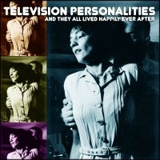 |
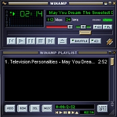 |
14 July 2005.
A new
Television Personalities song is available for download in mp3 format
on the A
Day In Heaven website!. The title of the track is
"May You Dream the Sweetest Dreams". |
|
31 May 2005.
"If I Could Write Poetry", the first release in
The Beautiful
Music's Television Personalities tribute series, is finally out! The first
100 copies sold on the
label's website
include a limited edition DIY CDR with a rough mix of demos, outtakes and live
covers. Volume 2 in the series should follow soon.
LOVEJOY -
Someone To Share My Life With
NIKKI SUDDEN - If I Could Write Poetry
THE
HIGHER ELEVATIONS - The Engine Driver Song
THE BASKERVILLES - La Grande
Illusion
THE THANES - World Of Pauline Lewis
BARTLEBEES - And Then
Suddenly
MANDERVILLES - Where's Bill Grundy Now (Middle Mix)
ARMITAGE
SHANKS - 14th Floor (Slight Return)
SIXTYNINE AND THE CONTINUOUS PEOPLE -
The Girl Who Had Everything
MINISKIRT - A Good And Faithful Servant
THE
PAISLEY SHIRTS - Sad Mona Lisa
SPIGGOTT V ZANE - Salvador Dali's Garden
Party
THE CONTAINER DRIVERS - A Picture of Dorian Gray
WOOG RIOTS -
Television Personalities
NO MEN - Part Time Punks
DARRELL WHITBECK - Stop
And Smell The Roses
NICK DANGER AND THE DANGER CITY REBELS - Diary Of A
Young Man
THE HAPPY COUPLE - The Dream Inspires
THE VOID - In A Perfumed
Garden
BIFF BANG POW - Someone To Share My Life With |
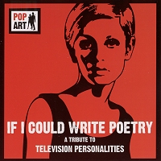 |
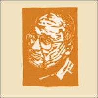 |
26 February 2005.
"The Legend! sings the songs of Daniel Treacy" 7" is finally
out, on Unpopular
Records. The single has two tracks, both recorded live at The Albert pub in
Brighton in October 2003.
The
Legend! (Everett True) plays two songs by the Television Personalities:
"If I Could Write Poetry" and "A
Sense Of Belonging". The single is a numbered edition of 500 and it
comes in a colour sleeve featuring a woodcut illustration of
Everett
True. |
|
25 February 2005.
Two brand new
Television Personalities songs are available for download in mp3 format
on the A
Day In Heaven website!. The tracks are
"I Hope He's Everything You Wanted Me To Be" and
"My Dark Places". Download them, burn them on CD,
design your own artwork and here you are: your very personal TVPs promo
single! |
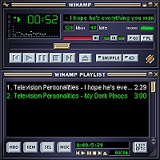 |
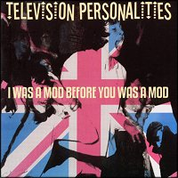 |
19 February 2005.
Overground
reissued "I Was A Mod Before You Was A Mod",
originally released in 1995 on the same label. This new pressing sports
spanking new CD artwork, a redesigned booklet and new liner notes by Ed
Ball. |
|
24 December 2004.
Two weeks ago
the TVPs headlined the first evening of the wonderful
Chickfactor "Mon Gala Papillons" weekend. It's been a
great night. You can find my pictures here
and much better ones on
Underexposed and
Unpopular's Photos page. Alistair Fitchett posted a great
review on his
Unpopular Blog while Keg collected many reviews on his TVPs
site's
gigs page. |
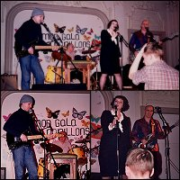 |
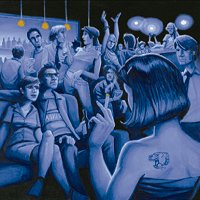 |
22 December 2004.
Out now on
Secret Crush
the Baskervilles'
second release: Midnight. The record includes a cover
of TVPs' "La Grande Illusion". The first 125 CDs come
with handmade one-of-a-kind artwork from the band. Buy it and then go on the
label's
site for a preview! (Or was it the other way round?). |
|
18 December 2004.
Nick Danger And
The City Rebels' debut EP "The Return Of Nick Danger" features a very
atmospheric cover of TVP's "Diary Of A Young Man" as
unlisted bonus track. A nice appetizer for the long awaited TVPs tribute
"If I Could Write Poetry I Would", due out on the same
label: Canada's The
Beautiful Music. |
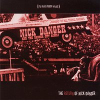 |
|
18 November 2004.
TVPs live in London at the
Bush Hall on
Dec. 10, 2004! The Television Personalities will
headline Chickfactor's "Mon Gala Papillons" first
day. Full info on the event's
page.
Tickets available on
Ticketweb. |
|
19 August 2004.
Another finely
and lovingly crafted international P!O!P! compilation (this time on US based
Windless Air
Music),"Falling Uphill" includes a previously
unreleased TVPs' gem:"Virgin And A Whore" (recorded
live for a radio session in 1992) and sports a magnificient Jowe Head cover
painting. Available through the
label or through
CD Baby
and other selected mailorders.
BARBARA MANNING & THE
GO-LUCKYS! - Dreaming (USA)
BASKERVILLES - John Riley And The Housewives
Who Love Him (USA)
TELEVISION PERSONALITIES - Virgin And A Whore (UK)
JOWE HEAD - Serpentine (UK)
WOOG RIOTS - Mrs. Pharmacist (Germany)
KATZE - People Jumping (Germany)
THE BIG EMPTY - Your Old Volvo (USA)
THE LONG DECLINE - Uncertainty (UK)
SIXTYNINE AND THE CONTINUOUS PEOPLE
- Sadness In Disguise (ITALY)
AUNT WAYNE - Clancy The Leprechaun (USA)
SWEDISH WHISTLER - Beautiful Day (Sweden)
ANGEL RACING FOOD - Guinea
Pig (UK)
MILTON FISHER - Something Like Nathalie (Germany)
DARRELL
WHITBECK - Around The World (USA)
OLIVES HAIRY CUSTARD - Whipper Snappers
(UK)
AMANDA BY NIGHT - Strange, Strange Drive (USA)
THE CONTAINER
DRIVERS - The Girl On The Bus (UK)
THE BARTLEBEES - Comin' Out, Stayin' In
(Germany)
ROCKFORMATION DISKOKUGEL - Tagebuch (Germany)
SUMMER FACTORY
- Saturday Morning Hangover Tune (France) |
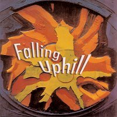 |
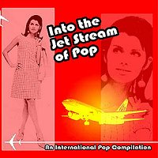 |
21 July 2004.
Canada's
The Beautiful
Music have just released "Into The Jet Stream Of
Pop", a finely and lovingly crafted international P!O!P! compilation
with many familiar names "old" and new. It also features TVPs'
"The Boy Who Couldn't Stop Dreaming" as unlisted bonus
track. Available through the
label or
through Poppolar and
other selected mailorders.
THE EMPIRICLES (CA) - 7 And A Half
Stars
THE HIGHER ELEVATIONS (SE) - Perfect Day
PAUL BEVOIR (UK) - The
Equestrian
THE VOID (UK) - Miranda Berkeley
PHIL WILSON (UK) - Even
Now
BASKERVILLES (US) - A Free Show In Battery Park
SWEDISH WHISTLER
(SE) - Miracle
THE HIGHER ELEVATIONS (SE) - Lovestruck
SUMMER FACTORY
(FR) - Las Migas
HI LO TRONS (CA) - Lost You In My Eye
JUNE BRIDES (UK)
- Just The Same
BARTLEBEES (DE) - Hollywood Holiday
NICK DANGER &
THE DANGER CITY REBELS (CA) - Perfect Dream
WOOG RIOTS (DE) - Woog Riots
Theme
SUMMER FACTORY (FR) - We Are From The West Coast
THE SHAMBLES
(US) - Blindspot
SUGARPLUM (UK) - Hannah
KOSMONAUT (UK) - Never
Realized
THE MULES (CA) - Phantom Father
THE LOCH NESS MOUSE (NO) -
Narrow Gauge Railways / Listen Up!
* TELEVISION PERSONALITIES (UK) - The
Boy Who Couldn't Stop Dreaming
( * Unlisted Bonus Track) |
|
14 July 2004.
Tòm and Jane love
vinyl 7” singles too. They thought "there should be more of them around"
and so they started the Félicité Singles Club. CITÉ 06
is Sixtynine And The Continuous People's "I
Can't Hear You (Anymore)" which features on side AA "Shadows That Haunt Me", an unreleased Television
Personalities' song, the only known version being from a 1988 Dan Treacy solo
acoustic live gig. Amongst the quotations scattered on the sleeve artwork there
are many verses from TVPs' "Haunted" |
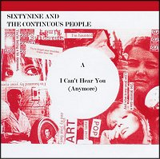 |
|
28 May 2004.
Alistair Fitchett
still likes vinyl 7” singles. "Most of my favourite labels seemed to be
built around 7” singles, and all did something special with the format".
So he started Unpopular, a label of 7” vinyl singles. UNPOP 2
is Lovejoy's:
"Strike A Pose", which features a cover of TVPs'
"Someone To Share My Life With" on the flipside. Also
announced: UNPOP 5: "The Legend sings the songs of
Daniel Treacy" |
|
23 May 2004.
Out now on
Discos Harte:
"Harte Para Todos!": a spanish tribute EP to the
Television Personalities ... in spanish! The bands and tracks featured are:
TCR: "Yo recuerdo a Bridget Riley (I remember Bridget Riley)",
Alpino: "Tiempo hostil (Smashing time)", Thy Surfin' Eyes:
"Diario de un hombre joven (Diary of a young man)" and Los Part-Time
Pops: "Quiero disfrutar del hilo musical (Favourite films)." Some lyrics
are faithful to the originals, while some are... not so much. The EP's
liner notes feature an
interesting story about (and homage to) Dan Treacy. |
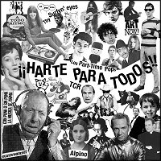 |
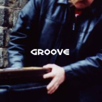 |
30 April 2004.
The April issue
(#3 / 2004) of Swedish music magazine
Groove came with a
free-to-subscribers-only compilation CD which includes TVP's "The Engine Driver Song" covered by
The Higher
Elevations. |
|
9 February 2004.
Swedish Pop
Sensation Jens Lekman
debuted with the CD-EP "Maple Leaves" in October 2003
after one year of limited edition CDRs (ranging from 1 to 250 copies) and hit
#11 in the Swedish Charts. The EP features a cover of TVPs' "Someone To Share My Life With", while a sample of the
vocalise that opens TVPs original was used in the EP's hit title track. The
record was re-released in Feb 2004 by US label
Secretly Canadian. |
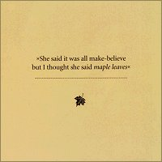 |
|
12 January 2004.
L.A. band
The Tyde released a
limited edition single featuring a cover of TVPs' "Look Back
In Anger" on side A and a rendition of
Modern Lovers'
"Roadrunner" on side B. Limited to 500 copies on Rough
Trade Shop "in house label"
For Us. |
|
3 November 2003.
Rough Trade
Records celebrates 25 years of activity with "Stop Me If
You Think You've Heard This One Before", a compilation featuring current
Rough Trade bands covering classic Rough Trade songs. Comic book and recording
artist Jeffrey
Lewis does an awesome version of "Part Time
Punks"... check it out! |
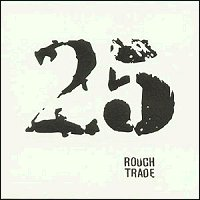 |
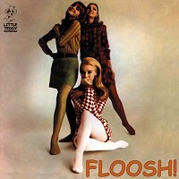 |
24 August 2002.
TVPs' rendition
of "Whatever Gets You Through The Night" is included
on "Floosh!" the new FAB compilation from
Little
Teddy
01. The Loch Ness Mouse "I Lost My Heart To Mary-Ann"
(from BiTe033)
02. Les Little Searchers "Fashion Conscious" (licensed from
Insect Eyes)
03. Tullycraft "Twee" (from LiTe749/BiTe034)
04. MOTO "The
Chicks Can Tell" (from BiTe036)
05. The Chrys&themums "The Wild
Provincial Boy" *
06. Bunsen Honeydew "Modern Gal" (from LiTe747)
07.
Neils' Children "Can't See Past My Eyes" (from LiTe751)
08. Thurston Lava
Tube "Genie With The Light Brown Lamp" *
09. The Jessica Fletchers "Up And
Around" (licensed from Perfect Pop)
10. The Silly Pillows "I Remember
Everything" *
11. The Bartlebees "Nightlife Diplomacy" (from BiTe030)
12.
The Chairs "The Impresario" *
13. Ivan Julian "I'm Not A Drone" *
14.
Johnny Cuomo "Modern Waste" (licensed from Bleeding Heart)
15. The Long
Decline "Hunched Up" (from BiTe037)
16. Bugs Eat Books "Dogsled" *
17.
Summer Factory "Serial Killer On A Summer Vacation" (prev. unrel. alt. mix)
18. Nutrition Facts "Hey Barbara" *
19. Boys' Star Library "You're In
A Gray Room Now" *
20. The Ethnobabes "Little Toby" (licensed from Perfect
Pop)
21. The Tables "Living Next Door To Alice In Wonderland" *
22.
Celest "Afraid" *
23. Mini Kyute "I Believe In Miracles" (licensed from
Chocolate & Lemonade)
24. Phonoboy "Monday" *
25. The Mad Scene
"Floosh!" *
26. Television Personalities "Whatever Gets You through The
Night" (from BiTe026)
(* = previously unreleased) |
|
18 March 2002.
Fire Records are
reissuing the complete TVPs early catalog. The schedule is the following: "... And Don't The Kids Just Love It" (18 March),
"Mummy You're Not Watching Me" (29 April),
"The Painted Word" (20 May), "They
Could Have Been Bigger Than The Beatles" (17 June). Furthermore
Overground
will re-release "I Was A Mod Before You Was A Mod" (27
May). |
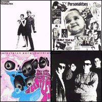 |
|
28 January 2002.
Finally out!
"Fashion Conscious", the long awaited TVPs anthology
from Little
Teddy, was finally released. You already know it's
FAB!
(TRACKLISTING: I´m not like everybody else / I hear a
new world / I´ve been down so long it looks like up to me / Whatever gets
you through the night / Honey I Sure Miss You / Time goes slowly when
you´re drowning / Meanwhile in a luxury dockland home / I was a mod
before you was a mod (shortversion) / Jennifer, Julie & Josephine / You, me
and Lou Reed / My Imaginary Friend / I Remember Bridget Riley / I wish you
could love me for what I am / Now that I´m a junkie / How does it feel to
be loved? / Seasons in the sun / Bike / No One's Little Girl / When I grow up I
want to be... / The boy who couldn´t stop dreaming)
|
|
23 September 2001.
Television
Personalities' "How Does It Feel To Be Loved?" is
included in "Woosh!",
Little
Teddy's 10th anniversary CD compilation featuring Bartlebees, McTells, TV
Personalities, Cannanes, MOTO, Direct Hits, Silly Pillows, Mad Scene,
Kickstand, Prime Movers, This Happy Breed, Groovy Metal Babies, Tullycraft,
Celest, Melvyn & the Smartys, Creams, Mickey & the Masonics, Armitage
Shanks, Arne Hansen, Yukio Yung, Blind Bats, Sexton Ming, Franklin Bruno,
Hanshalf Trio and Cee Bee Beaumont. |
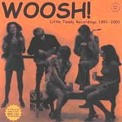 |
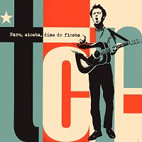 |
3 June 2001.
Spanish band TCR included a version of early TVPs classic
"Posing At The Roundhouse" (remade as
"Sangre En El Apolo" with TCR's own lyrics in spanish)
in their second album "Paro, Siesta, Dias de Fiesta",
featuring 12 tracks of ringing guitar pop with a pinch of Buzzcocks influenced
punk. More info on their label's website:
Subterfuge
Records |
|
8 October 2000.
US pop punk
band The Mr. T
Experience pay a loving homage to Dan Treacy on their new CD EP
"The Miracle Of Shame" with an acoustic song called
"I Don't Know Where Dan Treacy Lives". The song refers
to a period when Dan Treacy "disappeared" and no one was really sure where he
was. The reference point is obviously the classic TVPs masterpiece
"I Know Where Syd Barrett Lives" and the
lyrics are equally sweet and cruel, not totally
unlike Dan Treacy's own style. |
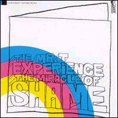 |
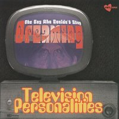 |
31 March 2000.
New on
Vinyl Japan Records:
"The Boy Who Couldn't Stop Dreaming". This new
anthology, mostly a collection of previous TVPs Vinyl Japan releases, includes
some of the most beautifully introspective TVPs numbers.
(TRACKLISTING: I Know Where Syd Barrett Lives, The Dream Inspires, Bike,
No One's Little Girl, How I Learned To Love The Bomb, The Grocer's Daughter, My
Imaginary Friend, I Remember Bridget Riley, I Don't Want To Live This Life, Far
Away and Lost In Joy, Do You Know What They're Saying About Me Now?, I Get
Frightened, He Used To Paint In Colours, Who Will Be Your Prince?, Do You Think
If You Were Beautiful You'd Be Happy?, I Suppose You Think It's Funny, I Know
Where Syd Barrett Lives).
|
|
27 May 1999.
New TVPs single
"The Boy Who Couldn't Stop Dreaming / When I Grow Up I Want
To Be..." on Damaged Goods records! It features two
unreleased tracks recorded back in 1994 and it's just wonderful!!!. Click on
the Damaged Goods
link and buy! Or go to your fave record store and pester them until they get
one copy for you! |
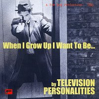 |
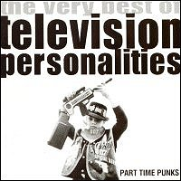 |
4 February 1999.
New on
Cherry Red Records (to be
released 1st March 1999): "Part Time Punks: The Very Best of
Television Personalities". Here's Cherry Red's official release note:
"Emerging from the punk/indie explosion of the late 70's and a career
spanning more than 15 years Television Personalities have become the band to
define indie pop. This 22 track album was compiled by Dan Treacy, the artistic
genius behind the name. The sleeve notes are written by Alan McGee of Creation
Records where he describes the TVP's as his favourite band ever and
acknowledges the influence they had on him setting up Creation Records."
(Cherry Red)
(TRACKLISTING: 14th Floor / Part Time Punks /
Where's Bill Grundy Now / Smashing Time / King & Country / I Know Where Syd
Barrett Lives / Silly Girl / A Picture Of Dorian Gray / Look Back In Anger / La
Grande Illusion / If I Could Write Poetry / Magnificent Dreams / Painting By
Numbers / Where The Rainbow Ends / Mysterious Ways / Three Wishes / Stop And
Smell The Roses / Someone To Share My Life With / The Painted Word / How I
Learned To Love The Bomb / Salvador Dali's Garden Party / Sad Mona
Lisa)
|
|
30 January 1999.
The fabulous
Thanes do
an amazing sixties-sounding organ-driven cover of TVPs' "World of Pauline
Lewis" on their new (split) single!
(Do The Dog Records -
B.P. 75 - 44350 Guerande - France - Phone + Fax: 02 40 62 11
54)
Thanes' singer + guitarist Lenny Helsing was also
TVPs drummer in 93/94 and he's on the "Made in Japan" and "Top Gear"
LPs. |
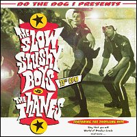 |
|